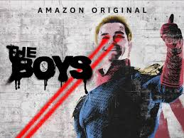

The Protagonist and villain of the show was deeply complex, I enjoyed the guilt and denial phase of season 4 but ultimately the character gave in to thier dark impluses and paid the price.
One of my favourite anime shows ever, I have rewatched it twice as well as read the manga twice. Alongside Fairytail and Tokyo Ghoul, Bleach took first place because I enjoyed both the manga and anime more
Enjoyed this absolute masterpiece during a very difficult time in my life, rewatched it 3 times now. It's amazing with an amzing villain. I really enjoyed hughie's character and growth.
 Have a go at itNothing can top watching this show for the first time, Franklin Saint along side Kaneki Ken are my favorite characters in fiction.
Tempted as I was to make this Arcane, 'My mercy prevails over my wrath'
Thank you for reading till the end, I hope you check these out.